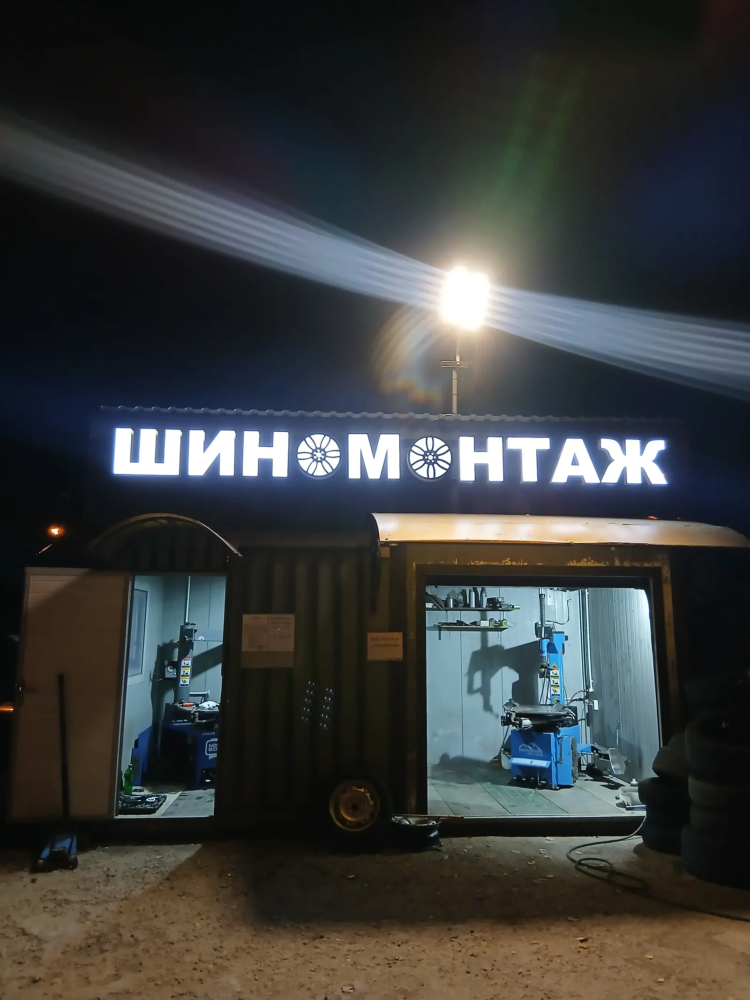
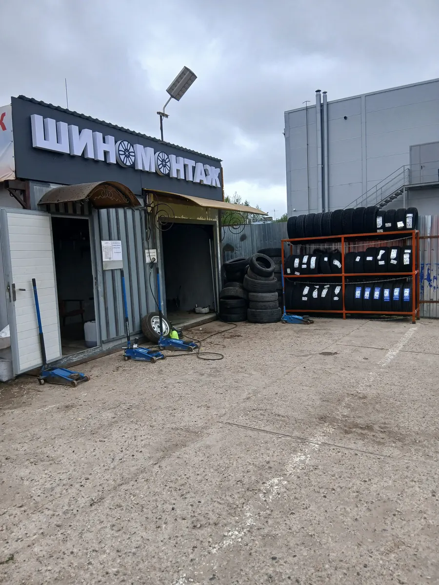
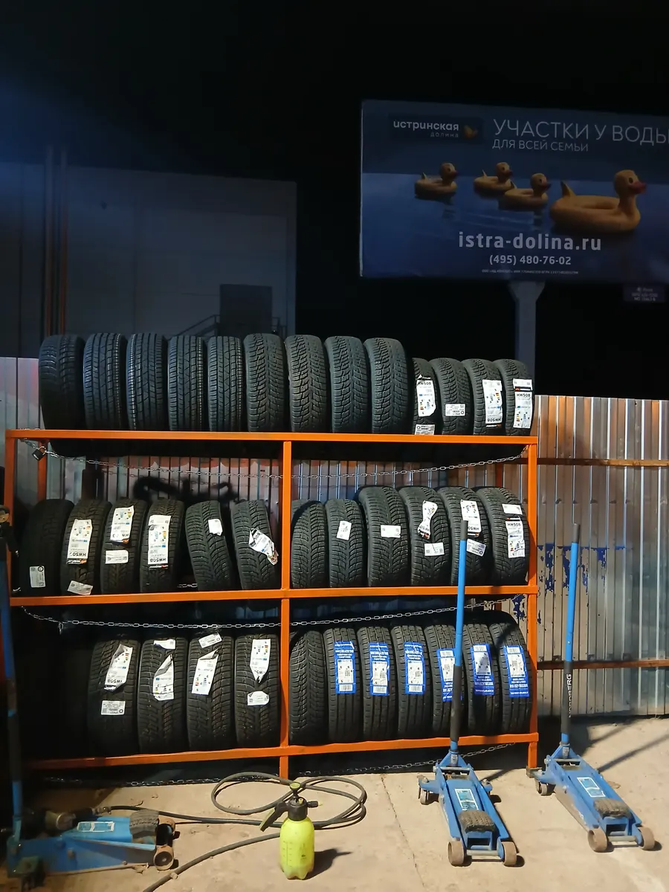
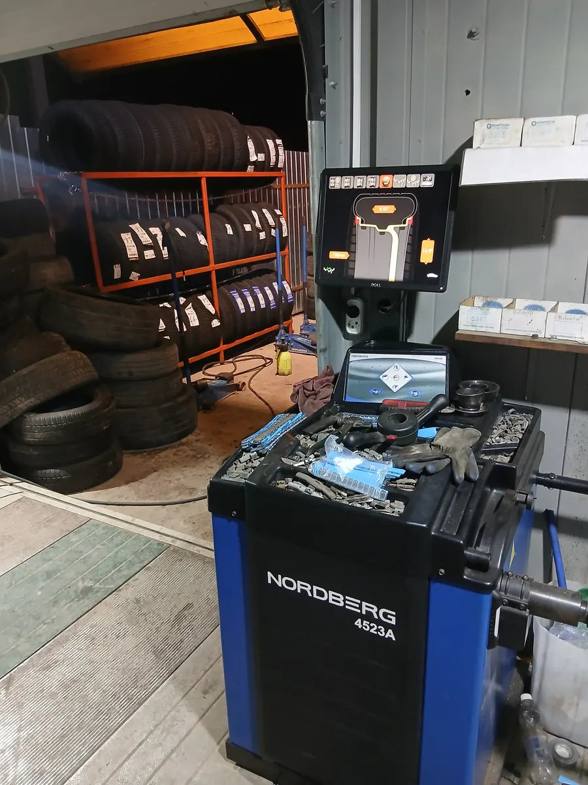

Шиномонтаж · Истра · посёлок Северный
Шиномонтаж в Истре, посёлок Северный: каждый день с 8 до 23
Замена шин, ремонт прокола, балансировка, выезд. Цену уточняйте по телефону или выберите время: заявка откроется в WhatsApp.
- Каждый день с 08:00 до 23:00
- Есть выездной шиномонтаж
- Рейтинг 4,6 и 53 оценки на Яндекс.Картах

Услуги
Прайса на карточке на Яндекс.Картах нет, поэтому цену уточняйте по телефону +7 (901) 901-24-54.
Колёса и шины
- Замена шин, сезонная переобувкауточнить
- Ремонт проколауточнить
- Балансировкауточнить
- Помощь с помятым дискомправка «выстукиванием», станка для прокатки нетуточнить
- Выездной шиномонтажуточнить
Список составлен по карточке и отзывам клиентов: на карточке указано «Шиномонтаж» и «Выездной шиномонтаж».
Как проходит
- 01
Позвонили или выбрали время
Телефон +7 (901) 901-24-54 или заявка в WhatsApp: останется нажать «отправить».
- 02
Приехали в посёлок Северный
Шоссейная улица, с18А, остановка «Северный» в 126 метрах.
- 03
Колесо пошло в работу
Замена шин, ремонт прокола, балансировка.
- 04
Забрали машину
Клиент в отзыве: «Небольшая очередь, оперативная работа и дружелюбные мастера».



Чем удобно
Работаем каждый день с 8 до 23
По данным карточки на Яндекс.Картах, без выходных.
Выручают в срочных случаях
Клиент в отзыве: «Отзывчивый сотрудник выручил ночью, быстро отозвался и помог с пробитым колесом».
Помогли с помятым диском
Клиент в отзыве: «Только тут согласились помочь».
Клиенты возвращаются
Клиент в отзыве: «каждый год переобуваю тут машины».
Отзывы с Яндекс.Карт
«Спасибо большое, в этом сезоне менял три раза на разных машинах. Небольшая очередь, оперативная работа и дружелюбные мастера»
Gosha Safarov · 5 мая
«Отличная шинка,каждый год переобуваю тут машины. Профи работают, проблем не было никакогда. Спасибо»
Денис Зорин · 8 октября 2024
«Помогли с диском. На трассе попал в яму и замял штамповку. Только тут согласились помочь. Станка для прокатки нет, но диск хорошо выстучали. Чтобы можно было ездить и потом прокатать. Спасибо»
saxandr · 23 июня 2024
Отзывы с карточки на Яндекс.Картах, без правок.
Частые вопросы
Когда вы работаете?
По карточке на Яндекс.Картах – каждый день с 08:00 до 23:00.
Как записаться?
Позвоните или выберите время в форме на сайте: заявка откроется в WhatsApp, останется нажать «отправить».
Сколько стоит?
Прайса на карточке нет, цену уточняйте по телефону +7 (901) 901-24-54.
Есть выезд?
На карточке указан выездной шиномонтаж. Условия и стоимость выезда уточняйте по телефону.
Запишитесь на удобное время
- Адрес
- посёлок Северный, Шоссейная улица, с18А, Истра
- Часы
- Каждый день 08:00–23:00
- Телефон
- +7 (901) 901-24-54